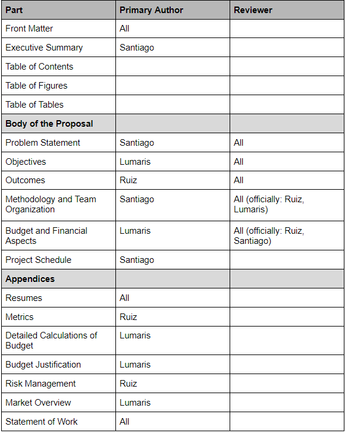
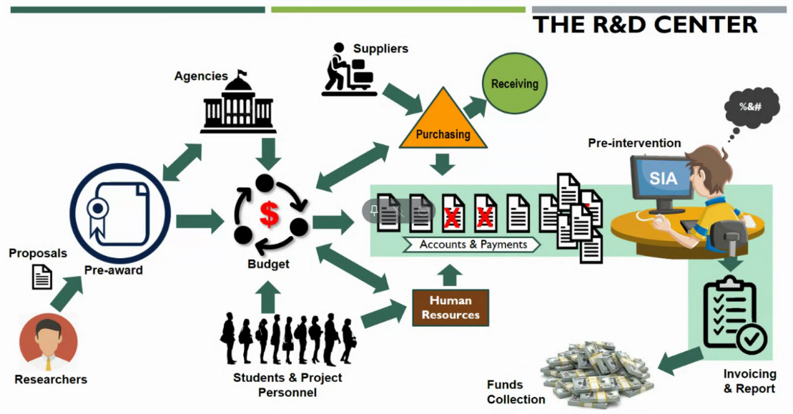

Team Meeting - 18 Jan 2021
Participants: Christian Santiago, Lumaris Ríos, Cristian Ruiz
Topics to discuss:
- Define project ideas
- Define Valet parking system idea
Present:
- Cristian Ruiz
- Christian Santiago
Discussed:
- Brainstorming session for possible capstone projects. Further discuss the purpose.
Access meeting notes via Google Docs here.
Team Meeting - 21 Jan 2021
Participants: Christian Santiago, Lumaris Ríos, Cristian Ruiz, Pedro Rivera
Topics to discuss:
- Ideas discovered
- Problem definition exercise
Access meeting notes via Google Docs here.
Team Meeting - 22 Jan 2021
Participants: Christian Santiago, Lumaris Ríos, Cristian Ruiz, Andres Rosado (CTI)
Discussed:
- Buildbot for CTI. Link: https://buildbot.net/
- UPRM Cloud Platform similar initiatives:
- VCL https://vcl.uprm.edu/
- Apache https://vcl.apache.org/
- Apache CloudStack
- Proxmox
Client Meeting - 22 Jan 2021
Participants: Christian Santiago, Lumaris Ríos, Cristian Ruiz, Dr. Manuel Jimenez (CID)
Discussed:
- Vacation Planner for CID
- Questions:
- ¿Cuál es el proceso de solicitud de vacaciones? (beginning to end)
- empleado solicita sus días (1)
- supervisor verificar conflictos con todas las solicitudes (2)
- cross training map para adiestramiento (3)
- generar calendario (general, por área u oficina, individual) certificado por supervisor (4)
- enviar a HR para verificación, cumple con planes de cada empleado (5)
- monitoreo y revisión cada mes (repeat)
- ¿Existe personal/empleado que no tenga acceso a equipo tecnológico?
- Se supone que todo el mundo tiene una computadora y acceso a info del centro
- que sea en la página web del centro con un auth
- Durante el proceso de aprobación, ¿cómo se recogen las firmas? ¿Existe algún reporte y/o documento que requiera una firma física o se aceptan firmas electrónicas?
- es requerido una firma del empleado, entiende que hay manera electrónica con un submit y por el auth
NOTES: PEERS = PARES de empleados para cross-training y planificación de área, USER-FRIENDLY ES UN PLUS
Access meeting notes via Google Docs here.
Team Meeting - 23 Jan 2021
Participants: Christian Santiago, Lumaris Ríos, Cristian Ruiz
Discussed assigning proposal parts:
Access meeting notes via Google Docs here.
Team Meeting - 25 Jan 2021
Participants: Christian Santiago, Lumaris Ríos, Cristian Ruiz
Discussed:
- Vote for a project.
- Final Decision = Vacation Planner
- Writing Center.
- Discuss progress.
- Possible tech stack: MariaDB (MySQL’s twin brother/sister) and PHP mentioned by Andres.
- Best possible PHP framework: Laravel.
- Objectives
- System to minimize a reasonable % of the service disconituity of the CID
- Authentication
- Reporting
- Sincronización con base de datos HR UPRM
- Database = mongodb or mysql or mariadb or firebase
- Web interface = react or vue or angular or vainilla
- Notification = nodemailer
- Authentication = passport.js or opensaml
- Comparing project complexity leading us to chose Vacation Planner.
Access meeting notes via Google Docs here.
Team Meeting - 26 Jan 2021
Participants: Christian Santiago, Lumaris Ríos, Cristian Ruiz
Discussed:
- Seguimiento a Jimenez
- Definir bien el problema y los objetivos para mañana
- Jueves sometemos las cosas en ecourses
Access meeting notes via Google Docs here.
Team Meeting - 27 Jan 2021
Participants: Christian Santiago, Lumaris Ríos, Cristian Ruiz
Discussed:
- Enviar correo a Jiménez y llamar al CID mañana (sí Jiménez no contesta).
- Definición del problema
- How to define a methodology for recommending approval personnel
Access meeting notes via Google Docs here.
Client Meeting - 29 Jan 2021
Participants: Christian Santiago, Lumaris Ríos, Cristian Ruiz, Dr. Manuel Jimenez (CID), Nerida Montalvo (CID)
Discussed:
- Preguntas:
- Explicación del proceso completo que se realiza cuando un empleado solicita vacaciones. - para el de RH
- ¿Existe alguna métrica con la que ellos puedan medir el impacto de la discontinuidad de servicios (dinero perdido, grants lost, etc)?
- Uso y costumbre
- tracking de la discontinuidad de servicio si es possible para visualizar
- ¿Existe una lista de los empleados con las tareas que pueden realizar, para de esa forma poder escoger el reemplazo del recurso que se va a de vacaciones?
- Sería de buen uso si nos pudieran proveer una copia de todos los formularios que forman parte del proceso.
- Ask Jimenez about other applications he tried: Manejadores de recursos humanos, reclutar shifts de trabajo programar vacaciones caros human resources vacation planner, cobran adicional por empleado, quiere un sistema estupidamente sencillo.
- Contacto de Nerida: nerida.montalvo@upr.edu ext. 5202, 5203, 2407
- 18 nov para el 3 de dic planificado los 30 dias y entregarlo a administracion el dia 9, 1 mes en completar
- Imagen de procesos en el CID: 
- Desean ver un calendario donde no hayan conflictos entre empleados
- Todo lo hacen por uso y costumbre
Access meeting notes via Google Docs here.
Team Meeting - 1 Feb 2021
Participants: Christian Santiago, Lumaris Ríos, Cristian Ruiz
Discussed:
- Working on proposal and updating our document given feedback from Dr. Nayda Santiago.
- Updated table of team's distributed document tasks.
Access meeting notes via Google Docs here.
Client Meeting - 12 Feb 2021
Participants: Christian Santiago, Lumaris Ríos, Cristian Ruiz, Dr. Manuel Jimenez (CID), Ileana Latorre (CID)
Discussed:
- Record video going through the storyline with the client.
Access video here.
Team Meeting - 12 Feb 2021
Participants: Christian Santiago, Lumaris Ríos, Cristian Ruiz, Andres Rosado (CTI)
Discussed:
- Sincronización de Base de Datos entre el CTI y la información de empleados del CID
- Sitema de Oracle HRDS, administración central
- Pablo Rebollo: contacto en administración central que puede relacionarse con las personas encargadas del sistema.
- nformación personal del empleado programado en rumad. Un servicio interno hace que salga en NEXT(portal.upr.edu)
- Tamara : el martes 16/feb estructura de datos de los archivos.
- Ellos suben un archivo, generan un reporte mensual.
- madelyn.rios@upr.edu directora de recursos humanos UPRM
- Manuel Jimenez debe solicitar a recursos humanos para darnos el archivo.
- OpenProject access.
- El sistema de acceder con el ColegioID (OpenSAML)
- OpenSAML, dos servidores se tienen que conocer, IDP = Identity Provider, Service Provider = quien va proveer el servicio, idp.uprm.edu => se necesita un archivo, openSAML genera archivo y luego se envia a IDP de UPRM => 1. generar archivo del servicio provider (tener un domain ej. https://cid.uprm.edu/vacationplanner -> Martin Melendez del CTI para Networking y DNS de la UPRM) 2. enviar archivo a CTI para añadir a IDP de la UPRM 3. archivo -> .XML 4. login button runs opensaml script and creates link to redirect user
- NOTE: alternative = shibboleth openSAML => manages all about login, this program will need open paths by itself not by framework, apache is easy
Access meeting notes via Google Docs here.